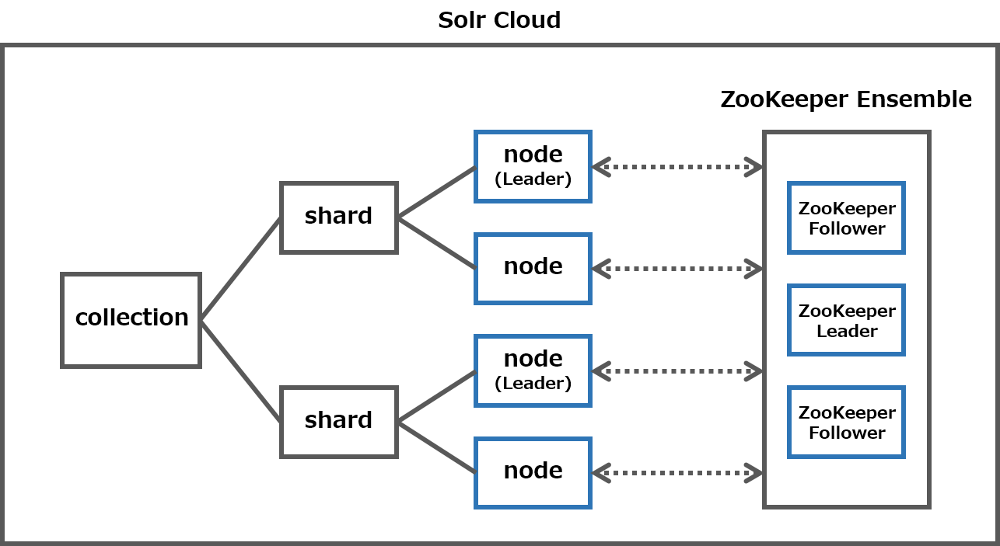
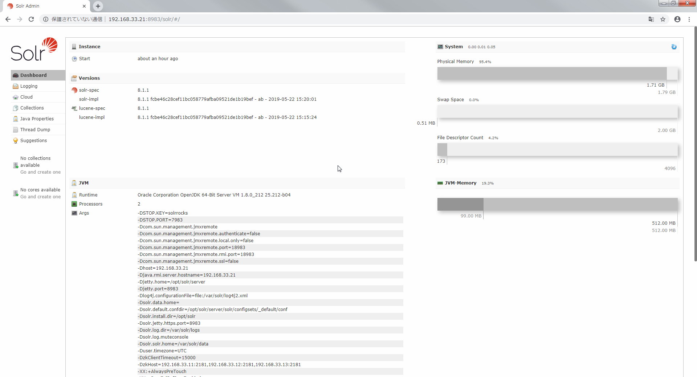
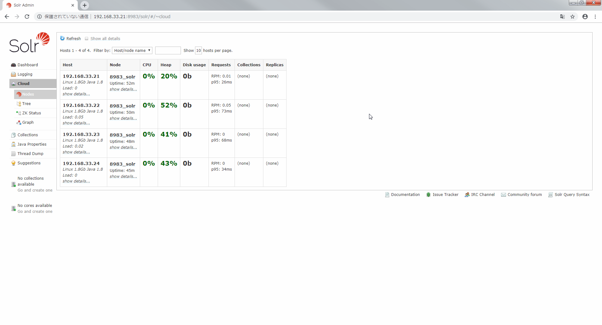
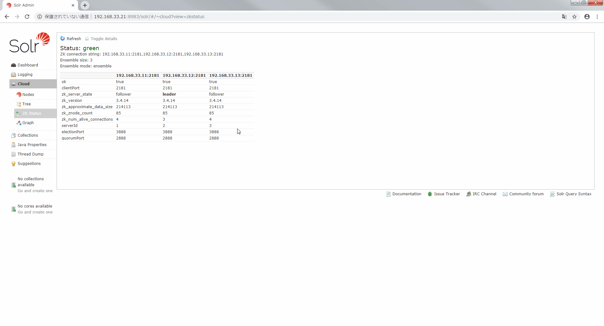
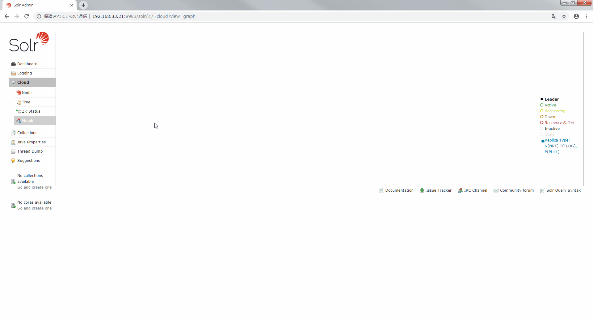
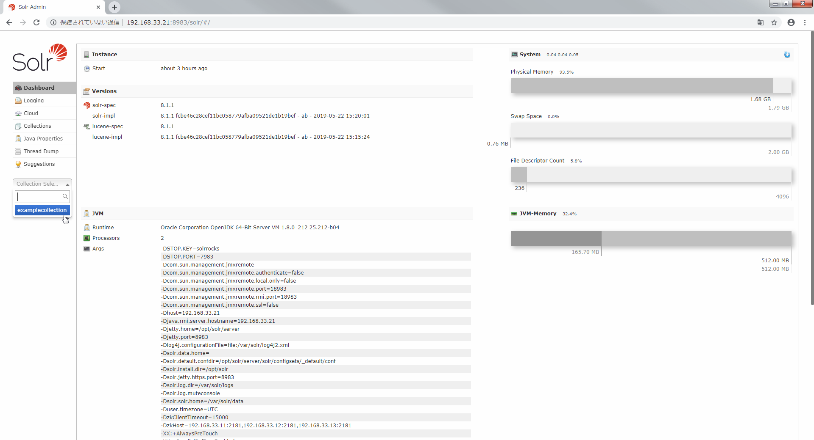
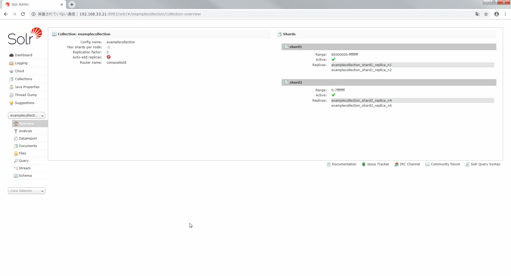
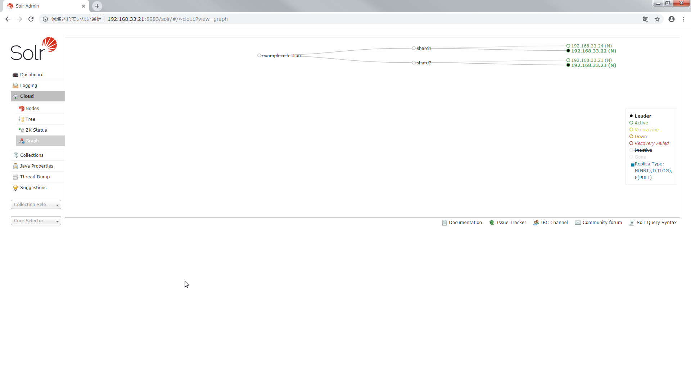

Solr Cloud を構築する
Solr Cloud を Vagrant で構築します．
Solr Cloud を構築するには，Solr はもちろん ZooKeeper も必要です．
Solr Cloud
イメージはこんな感じです．
- ZooKeeper : 3
- Solr node: 4
- shard : 2
- replica : 2
Zookeeper 3 個，Solr node 4 個の計 7 個の VM を構築します．

構成
構成を以下に示します．
D:\vagrant\solrcloud
┣Vagrantfile
┣create_zkensemble.sh
┗create_solrnode.sh
Vagrantfile
Zookeeper 3 個，Solr node 4 個の計 7 個の VM を構築します．
Solr を Cloud モードで起動する際に ZooKeeper の接続先を指定する必要があるので Vagrantfile で接続先文字列を用意するのがポイントです．
# ZooKeeper 数
zk_cnt = 3
# Solr node 数
node_cnt = 4
Vagrant.configure("2") do |config|
config.vm.box = "centos/7"
#--- ZooKeeper アンサンブル構築 ---#
(1..zk_cnt).each do |i|
config.vm.define "zk#{i}" do | zk |
zk.vm.hostname = "zk#{i}"
zk.vm.network "private_network", ip: "192.168.33.1#{i}"
zk.vm.provision :hosts, :sync_hosts => true
zk.vm.provision :shell, path: "./create_zkensemble.sh", args: "#{i} #{zk_cnt}"
end
end
#--- /ZooKeeper アンサンブル構築 ---#
#--- ZooKeeper アンサンブルの接続先文字列 ---#
zkensemble = ""
(1..zk_cnt).each do |i|
zkensemble += "192.168.33.1#{i}:2181,"
end
zkensemble.slice!(/,$/)
#--- /ZooKeeper アンサンブルの接続先文字列 ---#
#--- Solr Cloud 構築 ---#
(1..node_cnt).each do |i|
config.vm.define "node#{i}" do | node |
node.vm.provider :virtualbox do |vb|
# Solr node だけメモリ増やしてます
vb.customize ["modifyvm", :id, "--memory", "2048"]
vb.customize ["modifyvm", :id, "--cpus", "2"]
end
node.vm.hostname = "node#{i}"
node.vm.network "private_network", ip: "192.168.33.2#{i}"
node.vm.provision :hosts, :sync_hosts => true
node.vm.provision :shell, path: "./create_solrcloud.sh", args: "192.168.33.2#{i} #{zkensemble}"
end
end
#--- /Solr Cloud 構築 ---#
end
create_zkensemble.sh
ZooKeeper Ensemble を構築したときと同じです．
# Java をインストールする
yum install -y java-1.8.0-openjdk
# ZooKeeper を構築する
cd /var/tmp
yum install -y wget
wget http://ftp.jaist.ac.jp/pub/apache/zookeeper/zookeeper-3.4.14/zookeeper-3.4.14.tar.gz
tar xvf zookeeper-3.4.14.tar.gz
cp -ar zookeeper-3.4.14 /opt/
ln -s /opt/zookeeper-3.4.14 /opt/zookeeper
# ZooKeeper 用のユーザを作成する
groupadd zookeeper
useradd -g zookeeper -d /opt/zookeeper -s /sbin/nologin zookeeper
chown -R zookeeper.zookeeper /opt/zookeeper/*
# ZooKeeperの設定ファイルを用意する
cd /opt/zookeeper/conf
cp zoo_sample.cfg zoo.cfg
# dataDir を tmp から var に変更する
mkdir /var/lib/zookeeper
chown zookeeper.zookeeper /var/lib/zookeeper
cd /opt/zookeeper/conf
sed -i -e 's#dataDir=.*$#dataDir=/var/lib/zookeeper#' zoo.cfg
# ZooKeeper アンサンブルの設定を追記する
# $1 : ZooKeeper のノードID
# $2 : ZooKeeper アンサンブルの構成ノード数
echo "# ZooKeeper Ensemble" >> /opt/zookeeper/conf/zoo.cfg
for i in `seq 1 $2`
do
if [ $i = $1 ] ; then
# ノードIDが自分のものと一致する場合は 0.0.0.0 とする．
echo "server.${i}=0.0.0.0:2888:3888" >> /opt/zookeeper/conf/zoo.cfg
else
echo "server.${i}=192.168.33.1${i}:2888:3888" >> /opt/zookeeper/conf/zoo.cfg
fi
done
# dataDir にノードIDが記載された myid ファイルを用意する必要がある
echo $1 >> /var/lib/zookeeper/myid
# ZooKeeper を起動する
cd /opt/zookeeper
bin/zkServer.sh start
# Port を開放する
systemctl enable firewalld.service
systemctl start firewalld.service
firewall-cmd --zone=public --add-port=2181/tcp --add-port=2888/tcp --add-port=3888/tcp --permanent
firewall-cmd --reload
# ZooKeeper の状態を確認する
cd /opt/zookeeper
bin/zkServer.sh status
yum install -y nc
echo ruok | nc localhost 2181
# 終了ステータスが 0 でない場合に Vagrant が異常終了とみなし VM が連続生成されないことがあるので明示する
exit 0
create_solrcloud.sh
Solr を Cloud モードで起動します．
# Java をインストールする
yum install -y java-1.8.0-openjdk
# Solr を構築する
cd /usr/local/src/
yum install -y wget
wget http://ftp.jaist.ac.jp/pub/apache/lucene/solr/8.1.1/solr-8.1.1.tgz
tar xzf solr-8.1.1.tgz
./solr-8.1.1/bin/install_solr_service.sh solr-8.1.1.tgz
# Solr を Cloud モードで起動する
# $1 : Solr node の IPアドレス
# $2 : ZooKeeper アンサンブルの接続先文字列
sudo -u solr /opt/solr/bin/solr stop
sudo -u solr /opt/solr/bin/solr start -cloud -s /var/solr/data -p 8983 -z $2 -h $1
# Port を開放する
systemctl enable firewalld.service
systemctl start firewalld.service
firewall-cmd --zone=public --add-port=8983/tcp --permanent
firewall-cmd --reload
# 終了ステータスが 0 でない場合に Vagrant が異常終了とみなし VM が連続生成されないことがあるので明示する
exit 0
Solr Cloud を構築する
cd D:\vagrant\solrcloud
vagrant up
http://192.168.33.21:8983/solr/#/ にアクセスすると Cloud という項目が追加されていることがわかります．

Cloud をクリックすると node が一覧に表示されます．
4個 node を作成したので4個表示されています．
まだ collection を作成していないので Collections，Replicas は空です．

ZK Status をクリックすると ZooKeeper が一覧に表示されます．
3個 ZooKeeper を作成したので3個でアンサンブルが構成されています．
今回は 192.168.33.12 が leader に選出されたようです．

Graph をクリックすると Solr Cloud の構成が可視化されます．
まだ collection を作成していないので何も表示されません．

collection を作成する
早速 collection を作ります．
vagrant ssh node1 -c "sudo -u solr /opt/solr/bin/solr create_collection -c examplecollection -p 8983 -shards 2 -replicationFactor 2"
Dashboard を見ると collection が追加されていることがわかります．

collection を選択すると shard 2 replication 2 で構成されていることがわかります．

Cloud の Graph を見ると collection の shard に各 node が割り当てられていることがわかります．

インデクシング(文書登録)する
collection にインデクシングをおこないます．
vagrant ssh node1 -c "sudo -u solr /opt/solr/bin/post -c examplecollection -p 8983 /opt/solr/example/exampledocs/*.xml"
検索してみます．
$ curl -X GET "http://192.168.33.21:8983/solr/examplecollection/select?q=*:*&fl=id&sort=id%20asc&wt=json&indent=on" --noproxy 192.168.33.21
{
"responseHeader":{
"zkConnected":true,
"status":0,
"QTime":7,
"params":{
"q":"*:*",
"indent":"on",
"fl":"id",
"sort":"id asc",
"wt":"json"}},
"response":{"numFound":32,"start":0,"docs":[
{
"id":"0579B002"},
{
"id":"100-435805"},
{
"id":"3007WFP"},
{
"id":"6H500F0"},
{
"id":"9885A004"},
{
"id":"EN7800GTX/2DHTV/256M"},
{
"id":"EUR"},
{
"id":"F8V7067-APL-KIT"},
{
"id":"GB18030TEST"},
{
"id":"GBP"}]
}}
32件ヒットしました． rows を指定していないので id は 10 件のみの表示となっています． これで構築が完了しました．
shard を指定した検索
まずは shard1 を指定して検索します．
$ curl -X GET "http://192.168.33.21:8983/solr/examplecollection/select?q=*:*&fl=id&shards=shard1&sort=id%20asc&wt=json&indent=on" --noproxy 192.168.33.21
{
"responseHeader":{
"zkConnected":true,
"status":0,
"QTime":4,
"params":{
"q":"*:*",
"shards":"shard1",
"indent":"on",
"fl":"id",
"sort":"id asc",
"wt":"json"}},
"response":{"numFound":14,"start":0,"docs":[
{
"id":"3007WFP"},
{
"id":"EN7800GTX/2DHTV/256M"},
{
"id":"GB18030TEST"},
{
"id":"GBP"},
{
"id":"IW-02"},
{
"id":"MA147LL/A"},
{
"id":"TWINX2048-3200PRO"},
{
"id":"USD"},
{
"id":"VDBDB1A16"},
{
"id":"VS1GB400C3"}]
}}
14件ヒットしました．
次に shard2 を指定して検索します．
$ curl -X GET "http://192.168.33.21:8983/solr/examplecollection/select?q=*:*&fl=id&shards=shard2&sort=id%20asc&wt=json&indent=on" --noproxy 192.168.33.21
{
"responseHeader":{
"zkConnected":true,
"status":0,
"QTime":0,
"params":{
"q":"*:*",
"shards":"shard2",
"indent":"on",
"fl":"id",
"sort":"id asc",
"wt":"json"}},
"response":{"numFound":18,"start":0,"docs":[
{
"id":"0579B002"},
{
"id":"100-435805"},
{
"id":"6H500F0"},
{
"id":"9885A004"},
{
"id":"EUR"},
{
"id":"F8V7067-APL-KIT"},
{
"id":"NOK"},
{
"id":"SOLR1000"},
{
"id":"SP2514N"},
{
"id":"UTF8TEST"}]
}}
18件ヒットしました．
各 shard から異なる結果が得られたことから，文書を登録すると自動で各 shard に文書が登録されることがわかりました．
今度は shard1 と shard2 両方指定して検索します．
$ curl -X GET "http://192.168.33.21:8983/solr/examplecollection/select?q=*:*&fl=id&shards=shard1,shard2&sort=id%20asc&wt=json&indent=on" --noproxy 192.168.33.21
{
"responseHeader":{
"zkConnected":true,
"status":0,
"QTime":17,
"params":{
"q":"*:*",
"shards":"shard1,shard2",
"indent":"on",
"fl":"id",
"sort":"id asc",
"wt":"json"}},
"response":{"numFound":32,"start":0,"docs":[
{
"id":"0579B002"},
{
"id":"100-435805"},
{
"id":"3007WFP"},
{
"id":"6H500F0"},
{
"id":"9885A004"},
{
"id":"EN7800GTX/2DHTV/256M"},
{
"id":"EUR"},
{
"id":"F8V7067-APL-KIT"},
{
"id":"GB18030TEST"},
{
"id":"GBP"}]
}}
shard を指定しない場合と同じ結果になりました． つまりクエリで shard を全て指定しなくても全ての shard から検索することがわかりました．
まとめ
- collection を作成すると shard に各 node が自動で割り当てられます．
- Solr Cloud の collection に文書を登録すると自動で各 shard に文書が登録されます．
- Solr Cloud の collection を検索する際に shard を指定しなくても全 shard から検索されます．